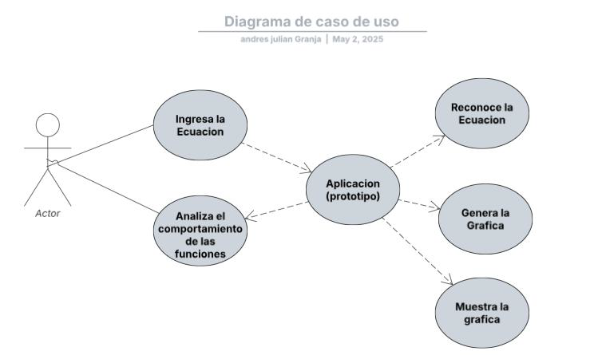

Aplicación Offline para Graficar Ecuaciones Matemáticas
Proyecto de investigación que busca facilitar la comprensión y el análisis de ecuaciones matemáticas mediante una herramienta capaz de reconocer escritura a mano a través de una cámara y mostrar su respectiva gráfica.


Problemática
En campos como matemáticas, física e ingeniería, comprender el comportamiento de las funciones es crucial. Sin embargo, la interpretación de ecuaciones complejas puede ser un desafío. La visualización de datos ofrece una solución, transformando números en representaciones visuales más comprensibles. Para facilitar este proceso, proponemos el desarrollo de una herramienta tecnológica interactiva que permita graficar funciones a partir de ecuaciones escritas a mano, utilizando Python. Esta herramienta busca simplificar el análisis de funciones para estudiantes y profesionales, sin importar su nivel de experiencia en matemáticas, y ofrecer una solución accesible y eficiente
Justificación
Este proyecto busca desarrollar una aplicación offline que permite capturar ecuaciones matemáticas con la cámara y visualizar sus gráficas, respondiendo a la necesidad de mejorar la enseñanza de las matemáticas en las aulas. La herramienta, basada en Python, facilitará la comprensión de funciones y el análisis matemático tanto para estudiantes como para profesionales, permitiendo una toma de decisiones más informada y un aprendizaje más efectivo. Al simplificar el acceso y uso de herramientas de graficación, buscamos fortalecer las competencias matemáticas fundamentales y ofrecer una solución adaptable y escalable a diferentes entornos educativos y profesionales. La visualización de datos, como se ha demostrado en diversos sectores, mejora la toma de decisiones, la colaboración y la eficiencia, lo que justifica aún más la importancia de esta herramienta
Beneficios que aporta la Visualización de Datos
Objetivos
Objetivo General
Desarrollar una herramienta para graficar funciones matemáticas que permita capturar ecuaciones escritas a mano mediante una cámara y visualizar sus gráficas de forma precisa..
Objetivos Específicos
- Analizar herramientas tecnológicas y trabajos de grado publicados en la web sobre el desarrollo de graficadores de funciones en Python.
- Configurar los sistemas que hacen parte del desarrollo del graficador de funciones, integrando las librerías necesarias y asegurando su correcto funcionamiento dentro del entorno de programación con el uso de buenas prácticas.
- Evaluar la eficiencia de la ejecución del programa mediante pruebas de rendimiento, precisión en la representación gráfica, pruebas de errores y retroalimentación de usuarios, con el objetivo de asegurar su funcionalidad y mejorar su desempeño.
Antecedentes
Para respaldar esta investigación, revisamos 10 estudios (6 internacionales y 4 nacionales) que exploran el uso de software educativo para mejorar la comprensión de funciones algebraicas. Estos estudios, que abarcan trabajos de pregrado y posgrado, incluyen desarrollos de software y propuestas didácticas que utilizan herramientas como GeoGebra
Conclusión
En resumen, la investigación y la revisión de antecedentes demuestran un creciente interés en el uso de herramientas tecnológicas para mejorar la enseñanza de funciones matemáticas. Estudios previos han explorado tanto el desarrollo de software educativo como la implementación de estrategias didácticas innovadoras. Esto respalda la importancia de crear herramientas accesibles como la nuestra: un graficador de funciones que busca facilitar la visualización y contribuir a la innovación en el aula
